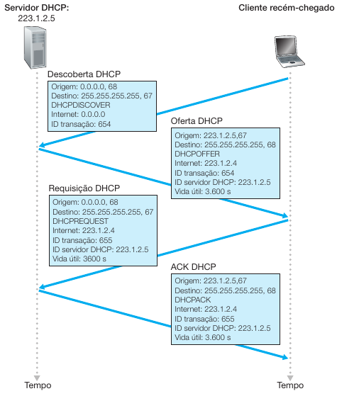

◉ Evolução das redes ethernet
O Protocolo DHCP permite que um determinado host obtenha de modo automático as configurações de
endereços IP. Além de obter um endereço IP, o DHCP permite que o host também receba informações
de Mascará de Rede, Gateway e DNS local.
Devido aos aspectos de automatizar uma rede, o DHCP é denominado um protocolo 'plug and play', essa
funcionalidade o torna muito atraente para diversos fins de utilização, seja residencial, pequenas
e grandes empresas.
O DHCP é um protocolo cliente-servidor; em geral, o cliente é um hospedeiro recém-chegado e quer
obter informações para se conectar em uma determinada rede, o servidor DHCP, proverá as
configurações para que esse hospedeiro possa se conectar à rede.
Para um hospedeiro, o DHCP é um processo de 4 etapas, sendo elas:
Descoberta (DIS);
Oferta (OFF);
Requisição (REQ);
Fechamento (ACK).
Na figura abaixo, temos os detalhes realizados entre o cliente e servidor para alocação de
um novo host em uma determinada rede

Descoberta (DIS): o primeiro processo de um novo host, é encontrar um servidor DHCP para interagir.
O host envia um pacote UDP tendo como porta destino a 67, através de um datagrama IP. Nessa
situação, o host não sabe informações do serviço DHCP, tão pouco o endereço do servidor IP do
DHCP; deste modo, o host cria um datagrama IP contendo sua mensagem de descoberta, tendo como
destino o endereço (IPv4) de destino de difusão 255.255.255.255 (broadcast), campo de endereço
MAC de destino setado em FF:FF:FF:FF:FF:FF, e o campo cliente setado com o endereço 0.0.0.0.
O cliente DHCP transmite, por difusão, esse pacote à camada de enlace, que então transmite esse
pacote para todos os nós conectados à sub-rede.
Oferta (OFF): assim que o servidor DHCP recebe a solicitação em broadcast, ele responde com uma
oferta de configurações de endereçamento, transmitindo por difusão a todos os nós presentes na
sub-rede, utilizando o endereço 255.255.255.255. Junto com a oferta, o pacote é respondido com
o mesmo número de ID utilizado pelo cliente, com informações prévias de Endereço IP, DNS, Máscara
de Rede e demais serviços entregues pelo DHCP local.
Solicitação (REQ): o Cliente que recebeu a responta do DHCP, fará uma devolutiva da oferta,
aceitando as informações passadas pelo servidor DHCP, mantendo o mesmo ID inicial da descoberta.
Fechamento (ACK): O Servidor DHCP responde a mensagem de requisição com um pacote DHCP ACK,
confirmando os parâmetros recebidos.
Após esse processo, o cliente está pronto para utilizar os recursos de rede pelo tempo de concessão
disponibilizado pelo servidor DHCP.
O DHCP pode trabalhar de 3 formas, sendo elas:
Automática: uma quantidade de IPs será liberada para ser alocada a dispositivos, como exemplo, a
rede 192.168.1.1/24, poderá ter até 254 host. Assim quando uma nova solicitação cegar ao DHCP, um
endereço IP em desuso será liberado permanente ao novo host.
Dinâmica: similar ao automático, exceto pelo fato de que um dispositivo terá um tempo determinado
para ficar alocado à rede, como exemplo, um tempo de lease de 3h, ou até o mesmo se desconectar
da rede.
Manual: partindo do princípio que cada dispositivo tem um endereço MAC único, é atribuído um
endereço IP manual que associa ao endereço MAC, com isso o dispositivo poderá usufruir da conexão
obtida; para isso o administrador de rede deverá informar qual IP será usado para o dispositivo em
questão.
A alocação dinâmica de endereços é a única das três formas que permite o reuso de endereços IPs
já usados anteriormente com outros hosts.
Configuração - Servidor DHCP
Quanto ao alinhamento das terminologias padrões do protocolo DHCP, temos:
DHCP Cliente: se trata de um host que obtém configurações atribuídas por meio de um servidor DHCP,
de modo a obter acesso a uma determinada rede.
DHCP Server: um host que executa o lado servidor da aplicação de DHCP, provendo as devidas
configurações a serem alocadas aos clientes DHCPs.
BOOTP Relay Agent: é um host ou roteador, que passa mensagens entre o clientes e servidores DHCPs.
Para esse artigo, foi utilizado, como base, a distribuição GNU/Linux Red Hat, porém, visando que é
sempre interessante ter como servidor de serviços distribuições voltadas para o tal fim, como
exemplo temos as distribuições Debian, CentOS, Red Hat, etc.
Por ser uma aplicação, as configurações aqui apresentadas, podem ser iguais em outras distribuições,
fique atento aos passos e caminhos, confira antes se existe os arquivos citados e nas pastas
citadas, caso contrário, é recomendado utilizar a distribuição Red Hat em sua última versão
estável disponível para download.
Configurando o lado servidor do DHCP
Primeiramente, devemos realizar a instalação do pacote responsável pela pelo lado servidor do DHCP.
Namos utilizar o pacote padrão. O símbolo "#", informa que o comando deve ser digitado estando
logado com usuário root:
# apt-get install isc-dhcp-server
É importante, uma forma de mantermos sempre o arquivo original pronto para uso, caso seja necessário,
vamos realizar um backup, seguindo o comando abaixo:
# mv /etc/dhcp/dhcpd.conf /etc/dhcp/dhcpd.conf.bkp
Após realizarmos o backup, vamos configurar o arquivo do lado da aplicação DHCP:
# nano /etc/dhcpd.conf
O lado servidor também faz uso do arquivo abaixo, para armazenar um banco de dados com as informações
de IP, tempo de lease, DNS e outras informações que foram repassadas para os clientes DHCP, com o
comando "cat", podemos visualizar o conteúdo do mesmo.
# cat /var/lib/dhcp/dhcpd.leases
Iniciando as configurações do lado servidor da aplicação, vamos editar o seguinte arquivo:
# nano /etc/dhcp/dhcpd.conf
Vamos inserir as linhas abaixo, realizando uma configuração básica da aplicação.
ddns-update-style none;
deny unknown-clients;
log-facility local7;
subnet 192.168.1.0 netmask 255.255.255.0
{
range 192.168.1.2 192.168.1.254;
server-identifier servidorDHCP;
authoritative;
option subnet-mask 255.255.255.0;
option domain-name "localhost.com.br";
option domain-name-servers 8.8.8.8,8.8.4.4;
option routers 192.168.1.1;
default-lease-time 600;
max-lease-time 7200;
}
Uma vez que o arquivo esteja criado e salvo, basta realizar o reload da configuração do servidor
DHCP:
# service isc-dhcp-server restart
Uma vez que o arquivo esteja criado e salvo, basta realizar o reload da configuração do servidor
DHCP:
# service isc-dhcp-server restart
Algumas diretrizes do arquivo de configuração aplicado, vide:
ddns-update-style: a forma que o servidor DHCP, irá realizar o armazenamento das informações
de rede dos clientes; o lado servidor utiliza de dois modos para realizar esse armazenamento, sendo:
• Improvisado (ad-hoc); e
• Interação de Intervalo (interim).
O modo improvisado, está em desuso, sendo não mais recomendado pela IETF.
• deny unknown-clients: nega o acesso a endereços MACs;
• log-facility local7: cria uma entrada no /etc/rsyslog.conf, para os logs do servidor;
• subnet 192.168.1.0 netmask 255.255.255.0: para qual rede o DHCP irá responder quando for solicitado;
• range 192.168.1.2 192.168.1.254: faixa de IPs que será disponibilizado aos clientes;
• server-identifier: nome que servirá de identificação do servidor;
• authoritative: indica que o servidor DHCP será autoritário em todo o seguimento da rede;
• option subnet-mask 255.255.255.0: essa opção define a máscara de subrede a ser fornecida aos clientes;
• option domain-name localhost.com.br: o nome de domínio do cliente;
• option domain-name-servers 8.8.8.8,8.8.4.4: essa opção lista os servidores de nomes (DNS) a
serem utilizados para resolução de nomes;
• option routers 192.168.1.1: além das informações padrões do DHCP, o cliente também receberá
o valor do gateway de rede;
• default-lease-time: tempo de concessão que o cliente DHCP poderá usar o endereço atribuído,
após esse tempo ele realizará nova solicitação, provavelmente receberá o mesmo endereço.
• max-lease-time: tempo máximo que um cliente poderá ficar com uma lease, após o tempo, poderá renovar.
Configurando os LOGs
Em distribuições de base Debian, o arquivo de configuração fica na pasta:
# nano /etc/rsyslog.conf
A seguinte entrada deve ser inserida no final do arquivo:
local7.* /var/log/dhcpd.log
Criar o arquivo dos logs:
# touch /var/log/dhcpd.log
Reiniciar o serviço de logs:
# service rsyslog restart
Configurando o lado cliente
Para realizarmos o lado cliente do serviço de DHCP, devemos inicialmente setar todas as configurações
em modo automático, com isso nenhum parâmetro é necessário ser realizado no lado cliente.